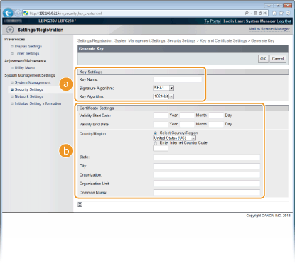

Generating Key Pairs
The key pair required for encrypted communication via Secure Sockets Layer (SSL) can be generated with the machine. You can use SSL when accessing the machine via the Remote UI. Up to three key pairs can be registered on the machine.
1
Start the Remote UI and log on in System Manager Mode. Starting the Remote UI
2
Click [Settings/Registration].

3
Click [Security Settings]  [Key and Certificate Settings].
[Key and Certificate Settings].

4
Click [Generate Key].


To delete a registered key pair
On the right side of the key pair that you want to delete, click [Delete] [OK].
A key pair cannot be deleted when "SSL" is displayed under [Key Usage], indicating that the key pair is currently in use. In this case, disable SSL or replace the key pair with another. You will then be able to delete it.
5
Specify settings for the key and certificate.

 [Key Settings]
[Key Settings][Key Name]
Enter up to 24 alphanumeric characters for naming the key pair. Set a name that will be easy for you to find later in a list.
Enter up to 24 alphanumeric characters for naming the key pair. Set a name that will be easy for you to find later in a list.
[Signature Algorithm]
Select the signature algorithm from the drop-down list.
Select the signature algorithm from the drop-down list.
[Key Algorithm]
The algorithm used to generate keys is RSA. Select the key length from the drop-down list. The larger the number for the key length, the slower the communication. However, the security is tighter.
[512-bit] cannot be selected for the key length, if [SHA384] or [SHA512] is selected for [Signature Algorithm].
The algorithm used to generate keys is RSA. Select the key length from the drop-down list. The larger the number for the key length, the slower the communication. However, the security is tighter.
[512-bit] cannot be selected for the key length, if [SHA384] or [SHA512] is selected for [Signature Algorithm].
 [Certificate Settings]
[Certificate Settings][Validity Start Date]
Enter the first date of validity of the certificate in year/month/day format in the range January 1, 2000 to December 31, 2037.
Enter the first date of validity of the certificate in year/month/day format in the range January 1, 2000 to December 31, 2037.
[Validity End Date]
Enter the last date of validity of the certificate in year/month/day format in the range January 1, 2000 to December 31, 2037. A date earlier than the [Validity Start Date] cannot be set.
Enter the last date of validity of the certificate in year/month/day format in the range January 1, 2000 to December 31, 2037. A date earlier than the [Validity Start Date] cannot be set.
[Country/Region]
Click the [Select Country/Region] radio button and select the country/region from the drop-down list. You can also click the [Enter Internet Country Code] radio button and enter a country code, such as "US" for the United States.
Click the [Select Country/Region] radio button and select the country/region from the drop-down list. You can also click the [Enter Internet Country Code] radio button and enter a country code, such as "US" for the United States.
[State]/[City]
As necessary, enter up to 24 alphanumeric characters for the address.
As necessary, enter up to 24 alphanumeric characters for the address.
[Organization]/[Organization Unit]
As necessary, enter up to 24 alphanumeric characters for the name of the organization.
As necessary, enter up to 24 alphanumeric characters for the name of the organization.
[Common Name]
As necessary, enter up to 48 alphanumeric characters for the common name of the certificate. "Common Name" is often abbreviated as "CN."
As necessary, enter up to 48 alphanumeric characters for the common name of the certificate. "Common Name" is often abbreviated as "CN."
6
Click [OK].
A key pair may take approximately 10 to 15 minutes to generate.
After a key pair is generated, it is automatically registered to the machine.